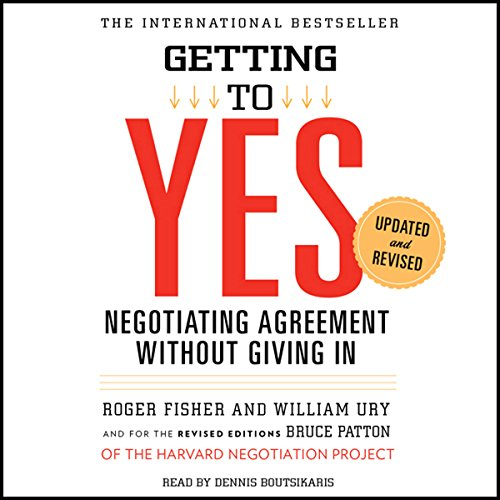

Library › Power & Strategy
Getting to Yes — Summary & Key Lessons

Negotiating agreement without giving in — the Harvard method: principled negotiation on the merits.
📖 OPEN THE FULL INTERACTIVE BREAKDOWN →🌐 Read it in Hindi, Hinglish, Gujarati, Tamil & 22 more languages — free, with audio.
💡 The Big Idea
The Harvard Negotiation Project's field manual — the most influential negotiation book ever written — replaces the two broken defaults (HARD bargaining: contest of wills that damages relationships; SOFT bargaining: concessions that produce resentful losers) with PRINCIPLED NEGOTIATION on four legs: SEPARATE THE PEOPLE FROM THE PROBLEM (be soft on humans, hard on merits — negotiators are people first: egos, emotions, perceptions all in the room), focus on INTERESTS, NOT POSITIONS (positions are what people say they want; interests are WHY — and opposing positions regularly hide compatible interests), INVENT OPTIONS FOR MUTUAL GAIN (separate inventing from deciding; expand the pie before dividing it), and insist on OBJECTIVE CRITERIA (market value, precedent, law, expert standards — so outcomes reflect merit, not stubbornness). The power tool: BATNA — Best Alternative To a Negotiated Agreement — the true measure of negotiating power and the shield against both bad deals and bullies.
🧠 The 4 Key Lessons
Lesson 1: Don't Bargain Over Positions: The Orange and the Library Window
Chapters 1–3: The Problem / The Method's First Two Principles
Positional bargaining's anatomy: each side stakes a position, defends it as ego attaches, concedes grudgingly — producing agreements that are unwise (mechanical splitting rather than merit), inefficient (the concession dance takes forever), and relationship-damaging (a contest of wills leaves a loser). The first two repairs: SEPARATE PEOPLE FROM PROBLEM — attack the issue side-by-side rather than each other face-to-face: handle PERCEPTIONS (see their view from inside; discuss perceptions explicitly), EMOTIONS (recognize and legitimize them; allow steam-venting without reacting), and COMMUNICATION (listen actively, speak about yourself not about them — 'we feel discriminated against' beats 'you broke your word'). Then INTERESTS, NOT POSITIONS: behind every stated position live the needs, fears, and desires that produced it — and while positions clash by construction, interests overlap surprisingly often; the excavation tools: ask WHY (what need does their position serve?) and WHY NOT (what interest blocks what you propose?) — remembering the most powerful interests are basic human needs: security, recognition, control, belonging.
📖 Example: The book's two teaching fables: the sisters quarreling over one ORANGE — compromising by halving it, one discarding her peel (she wanted fruit for eating), the other discarding her fruit (she wanted peel for baking): positions ('the orange is mine')… Read the full example →
⚡ Do this: For your live negotiation: write their position, then excavate — three WHYs beneath it (what needs produce this demand?) and three beneath your own. Look for the orange: which of your interests are actually compatible? And separate one people-problem from the merits this week: name the emotion explicitly, then return, side-by-side, to the issue.
Lesson 2: Invent Options for Mutual Gain: Grow the Pie Before Cutting It
Chapter 4: Invent Options for Mutual Gain
The creative leg. Four obstacles kill option-generation: PREMATURE JUDGMENT (the critic strangling the inventor mid-sentence), searching for THE SINGLE ANSWER (narrowing before exploring), the FIXED-PIE assumption (his gain must be my loss), and 'THEIR problem is theirs' (solving only your side of the equation produces proposals they can't accept). The repairs: SEPARATE INVENTING FROM DECIDING (the brainstorm rule — wild options welcomed, criticism scheduled for later; ideally invent WITH the other side: joint sessions transform adversaries into co-authors), BROADEN the options (the circle chart: cycle between the problem, diagnosis, approaches, and specific actions; examine the issue through different experts' eyes — how would a banker, engineer, psychologist slice this?), hunt for MUTUAL GAIN (shared interests are latent in every negotiation — and DIFFERENCES are the raw material of trade: different valuations, timelines, risk appetites, and forecasts let each side give what's cheap to them and precious to the other), and make their decision EASY (draft the 'yesable proposition': the offer they can accept in one word, with justifications they can carry to their own constituents).
📖 Example: The Camp David masterclass anchors the chapter: Egypt demanded the Sinai's return (sovereignty position); Israel demanded to keep portions (security position) — irreconcilable AS POSITIONS. The interests beneath: Egypt's was sovereignty's symbol (the flag,… Read the full example →
⚡ Do this: Schedule a pure inventing session for your negotiation — thirty minutes, criticism banned, quantity targeted (twenty options minimum, wild ones included); invite the other side if the relationship permits. Then mine the differences deliberately: list where your valuations, timelines, and risk appetites DIVERGE — each divergence is a trade waiting to be structured. Close by drafting the yesable proposition.
Lesson 3: Insist on Objective Criteria: Merit as the Referee
Chapter 5: Insist on Using Objective Criteria
The fourth leg dissolves the contest of wills: when interests genuinely conflict (price, deadlines, terms), refuse to settle by stubbornness — insist the outcome rest on OBJECTIVE CRITERIA: market value, replacement cost, precedent, professional standards, law, expert opinion, efficiency, reciprocity ('what a court would decide', 'what others in your position have accepted'). The method's three practices: FRAME each issue as a joint search for criteria ('what's the theory behind that figure? how would we know what's fair here?'), REASON AND BE OPEN TO REASON about which standards apply and how (principled negotiation is not a fancier way to be rigid — the willingness to be persuaded by better criteria IS the credential that earns the other side's), and NEVER YIELD TO PRESSURE — only to principle ('as pressure rises, respond by inviting them to the merits: 'I don't work on the basis of threats — let's look at the standard''). The elegant addition: FAIR PROCEDURES when standards can't decide — the ancient cake-cutting protocol (one cuts, the other chooses) scaled to term-drafting, turn-taking, and third-party arbitration.
📖 Example: The chapter's set-piece is the insurance adjuster: a totaled car, the adjuster's opening offer delivered as verdict — met not with a counter-position but with criteria questions: 'how did you compute that? what would a replacement actually cost at local… Read the full example →
⚡ Do this: Before your negotiation, research three applicable standards (market comparables, precedent, expert benchmarks) — arrive as the best-informed person on the MERITS in the room. Frame every contested number as a criteria question ('help me understand the basis'). And pre-script your pressure response: 'I don't respond to pressure — I respond to reasons; which standard supports that?'
Lesson 4: BATNA: The Power Behind Every Word
Chapters 6–8: What If They're More Powerful / Won't Play / Use Dirty Tricks
The book's most exported concept: your negotiating power is not resources, rank, or nerve — it's your BATNA (Best Alternative To a Negotiated Agreement): what you'll actually do if no deal happens. The method: DEVELOP it actively (invent alternatives, improve the best one, and know it precisely — the vague 'I'll find something' produces vague courage), MEASURE every proposal against it (the only true test of any offer — protecting you simultaneously from accepting too little and from rejecting what you can't beat), CONSIDER THEIRS (their eagerness is legible in their alternatives), and — the power inversion — the better your BATNA, the more power radiates through every sentence without a threat being spoken. The defensive chapters complete the kit: against opponents who WON'T play, use NEGOTIATION JUJITSU (don't push back — invite critique of your ideas, recast attacks on you as attacks on the problem, ask questions and let silence work) or the ONE-TEXT procedure (a mediator's single draft, iterated by both sides' criticism); against DIRTY TRICKS (deliberate deception, phony authority, good-cop routines, extreme anchors), the meta-move: NAME the tactic explicitly and negotiate the RULES OF THE GAME itself — tricks, recognized aloud, mostly die of exposure.
📖 Example: The BATNA parable Fisher and Ury deploy: the small-town homeowner negotiating with the only buyer in sight versus the same homeowner holding a second written offer — identical house, identical skills, transformed power: the alternative, not the… Read the full example →
⚡ Do this: Before ANY significant negotiation: write your BATNA concretely, spend one hour improving it (one more alternative developed changes your voice), estimate theirs, and set your walk-away against the analysis. In the room: measure every offer against the BATNA, not against your hopes. And when a tactic appears — name it, pleasantly, and propose negotiating the rules.
✅ 5-Step Action Plan
- Excavate interests: three WHYs beneath their position and yours.
- Hold the inventing session — twenty options, judgment suspended.
- Arm yourself with three objective standards; yield to principle, never pressure.
- Write and improve your BATNA; measure every offer against it.
- Name tactics aloud; negotiate the rules when the game turns dirty.
💬 Best Quotes from Getting to Yes
- “Any method of negotiation may be fairly judged by three criteria: it should produce a wise agreement... it should be efficient... and it should improve or at least not damage the relationship.”
- “The reason you negotiate is to produce something better than the results you can obtain without negotiating.”
- “Separate the people from the problem.”
Interactive version: mark lessons as read, listen in your language, share quote cards.